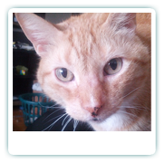
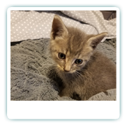

Sam
The Grump
2003-2015His Story: Sam was a handsome orange cat, and very prideful to boot. He came to my husband when he was about 2 years old. We're unsure what his history was like before, but we suspect it wasn't great. Distrustful of everyone but my husband, he did not enjoy visitors and would hide until the coast was clear. He had a soft spot for tuna though, and thats how I was able to earn his trust! He loved sitting on cardboard boxes and scratching them until they collapsed. His favorite place to sleep on was an old red blanket on the bed.
Sadly, what we thought was a dental checkup & tooth removal turned into his last day as the vet discovered Sam had advanced bone cancer
Sunny
The Angel
2018-2018Her Story: Sunny came to us one afternoon when she ran up to my husband and started meowing. She was small, only a month or so old, and her mama was nowhere to be seen. After she had a checkup, we decided to keep her! She bonded with Ivan, and the two of them were nearly always together. He enjoyed showing her the ins and outs of being a cat, and she liked having someone to pounce on and play with.
After about a month and a half however, she suddenly got extremely sick and despite our best efforts, she passed away at the vet. We'll never know what caused it, though the vet suggested there may have been something the mama cat ate or drank during her pregnacy that resulted in neurological